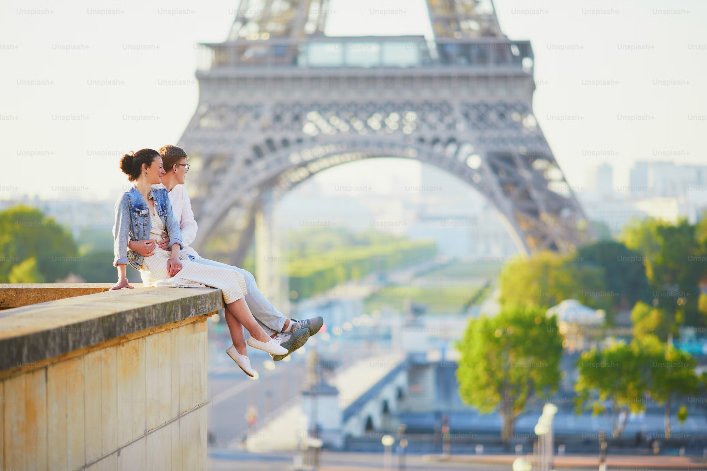
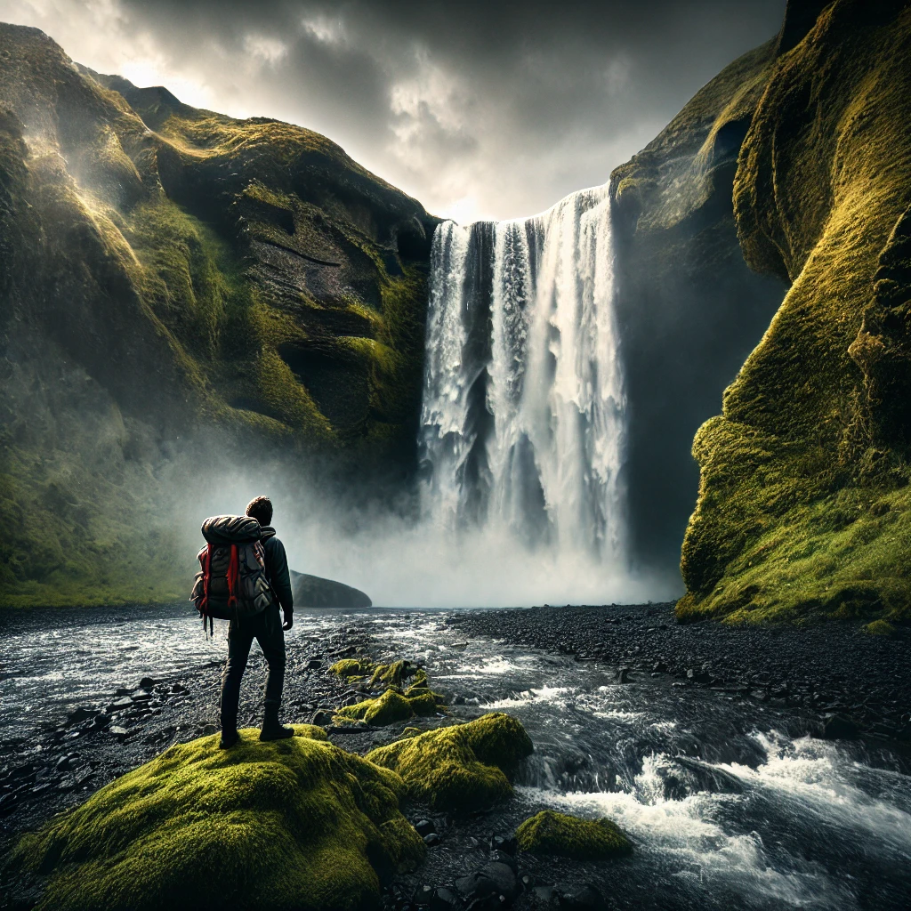
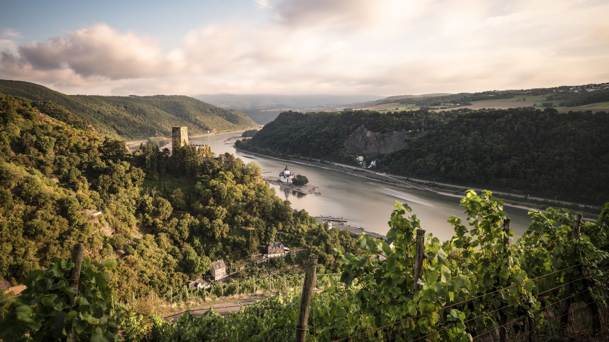
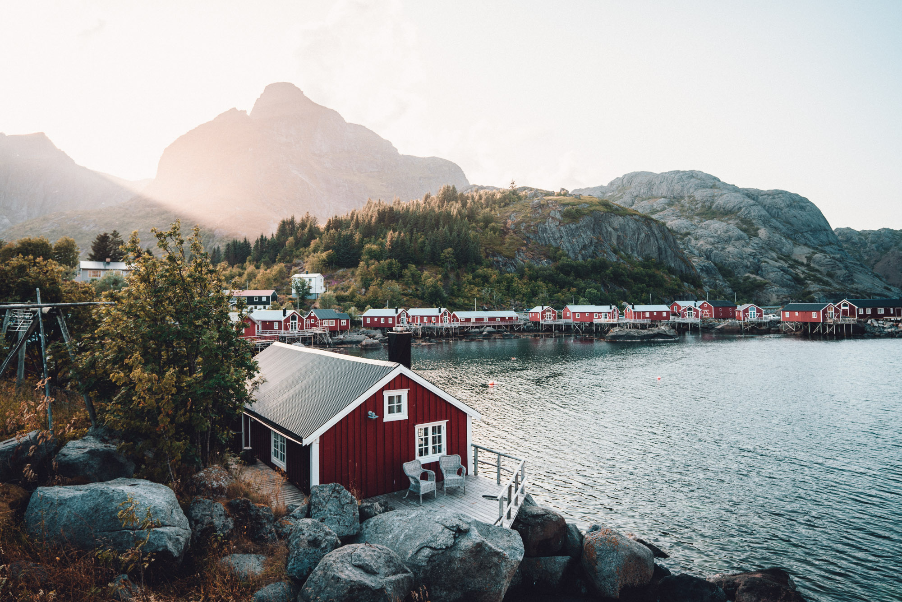
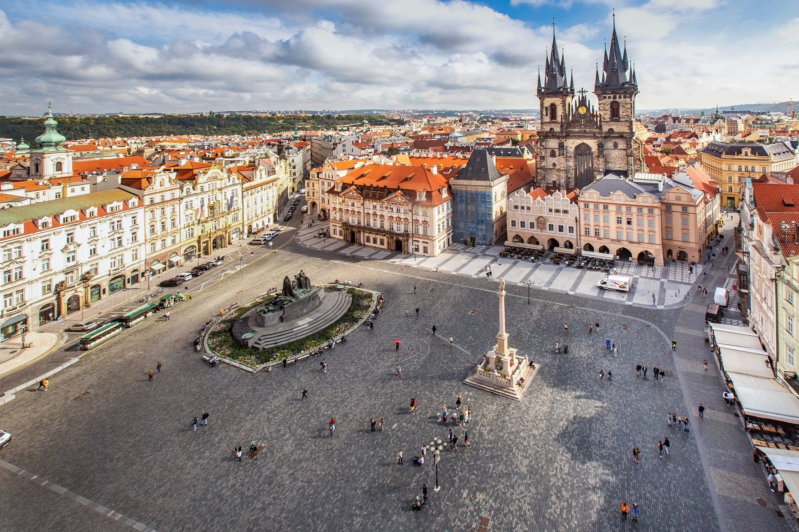

Europa Bestemmingen
Van de Middellandse Zee tot de fjorden van Scandinavië
Ontdek Europa
Europa biedt een rijke mix van geschiedenis, cultuur, natuur en culinaire ervaringen. Met zijn diverse
landschappen, van de zonnige stranden van het Middellandse Zeegebied tot de ruige Alpen en de
mysterieuze fjorden, is er voor elke reiziger iets te beleven.
44+
Landen
24
Talen
400+
UNESCO-sites
3000+
Jaar geschiedenis
Uitgelichte bestemmingen

Parijs, Frankrijk
Beste tijd: April-Juni, Sep-Okt
Ideale duur: 3-5 dagen
Perfect voor: Cultuur, Romantiek, Gastronomie
Parijs, de stad van licht en liefde, is een van 's werelds meest iconische stedentrips. Ontdek
wereldberoemde bezienswaardigheden zoals de Eiffeltoren, het Louvre, Notre-Dame en de
Champs-Élysées. Verdwaal in de charmante wijken zoals Montmartre en Le Marais, geniet van
verfijnde Franse keuken, en beleef het culturele aanbod in de talloze musea en theaters.
Hoogtepunten
- Beklim de Eiffeltoren voor panoramische uitzichten
- Bewonder de Mona Lisa in het Louvre
- Geniet van een cruise over de Seine
- Bezoek de artistieke wijk Montmartre
- Proef authentieke Franse patisserie
Bekijk reisopties

IJsland
Beste tijd: Mei-Sep (zomer), Nov-Mar
(noorderlicht)
Ideale duur: 7-10 dagen
Perfect voor: Natuur, Avontuur, Fotografie
IJsland, het land van vuur en ijs, biedt een ongeëvenaarde natuurervaring. Bezoek dramatische
watervallen, geothermische bronnen, gletsjers, zwarte zandstranden en vulkanische landschappen.
Rijd de beroemde Golden Circle-route, relax in de Blue Lagoon, en ga in de winter op jacht naar
het noorderlicht. In de zomer kun je genieten van de middernachtzon en prachtige wandelingen.
Hoogtepunten
- Bewonder de geothermische activiteit in Geysir
- Bezoek de majestueuze Gullfoss-waterval
- Ontspan in de Blue Lagoon
- Verken het indrukwekkende Thingvellir National Park
- Aanschouw de zwarte stranden van Vik
Bekijk reisopties
Santorini, Griekenland
Beste tijd: April-Juni, Sep-Okt
Ideale duur: 4-7 dagen
Perfect voor: Romantiek, Strand, Gastronomie
Santorini, met zijn kenmerkende wit-blauwe architectuur tegen een achtergrond van diepblauwe zee,
is een van de meest fotogenieke eilanden van Griekenland. Geniet van adembenemende
zonsondergangen in Oia, verken de historische ruïnes van Akrotiri, zwem in kristalheldere baaien
en proef de lokale wijnen in een van de vele wijngaarden op het eiland.
Hoogtepunten
- Bewonder de zonsondergang in Oia
- Verken de smalle straatjes van Fira
- Zwem in de vulkanische stranden
- Bezoek de oude ruïnes van Akrotiri
- Maak een boottocht rond de caldera
Bekijk reisopties
Europese regio's

Mediterraan gebied
Zonnige stranden, heerlijke keuken en duizenden jaren geschiedenis.
- Italië
- Spanje
- Griekenland
- Portugal
- Malta

West-Europa
Bruisende steden, pittoreske dorpjes en prachtige plattelandsgebieden.
- Frankrijk
- Nederland
- België
- Duitsland
- Verenigd Koninkrijk

Scandinavië
Betoverende natuur, fjorden en een rijke Vikinggeschiedenis.
- Noorwegen
- Zweden
- Denemarken
- Finland
- IJsland

Oost-Europa
Rijke culturen, indrukwekkende landschappen en historische steden.
- Polen
- Tsjechië
- Hongarije
- Kroatië
- Roemenië
Praktische reisinformatie
Vervoer in Europa
Europa heeft een uitstekend transportnetwerk dat het makkelijk maakt om tussen landen te reizen:
- Trein: Het Europese spoorwegnetwerk is uitgebreid. Met een Interrail-pas
kun je door meerdere landen reizen.
- Vliegtuigen: Talloze budgetvluchten verbinden Europese steden.
- Auto: Huur een auto voor meer flexibiliteit, vooral buiten de grote steden.
- Bus: Budgetvriendelijke optie voor zowel korte als lange afstanden.
Beste reistijd
De ideale reistijd hangt af van je bestemming en voorkeuren:
- Lente (mar-mei): Mild weer, minder toeristen, perfecte tijd voor
stedentrips en natuurwandelingen.
- Zomer (jun-aug): Warm weer, perfect voor stranden, maar drukker en duurder.
- Herfst (sep-nov): Aangenaam weer, prachtige herfstkleuren, minder drukte.
- Winter (dec-feb): Koud maar sfeervol met kerstmarkten en wintersport in de
Alpen.
Visum & Documenten
Voor Nederlandse reizigers:
- EU-landen: Alleen een geldig identiteitsbewijs nodig.
- Niet-EU landen in Europa: Voor sommige landen is een paspoort vereist.
- Zorg altijd voor een geldige reisverzekering.
- Check specifieke inreisvoorwaarden voor je vertrek.
Budgettips
Europa kan duur zijn, maar met deze tips houd je het betaalbaar:
- Reis buiten het hoogseizoen voor lagere prijzen.
- Overweeg hostels, B&Bs of appartementen in plaats van hotels.
- Maak gebruik van gratis stadswandelingen en museumkortingen.
- Eet waar de locals eten in plaats van in toeristische gebieden.
- Koop een lokale SIM-kaart of gebruik WiFi om roamingkosten te vermijden.